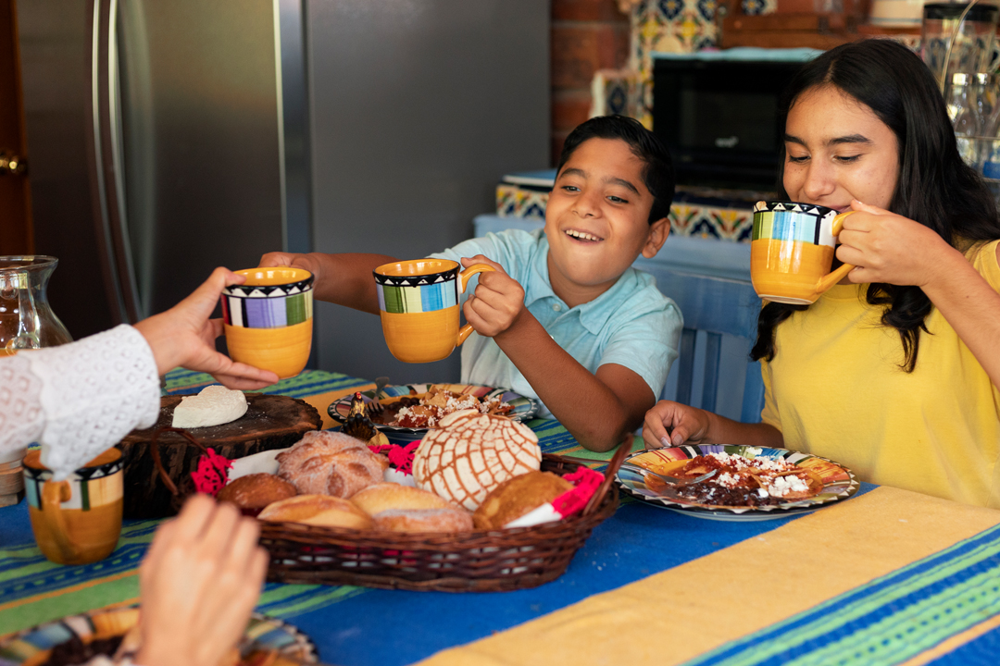
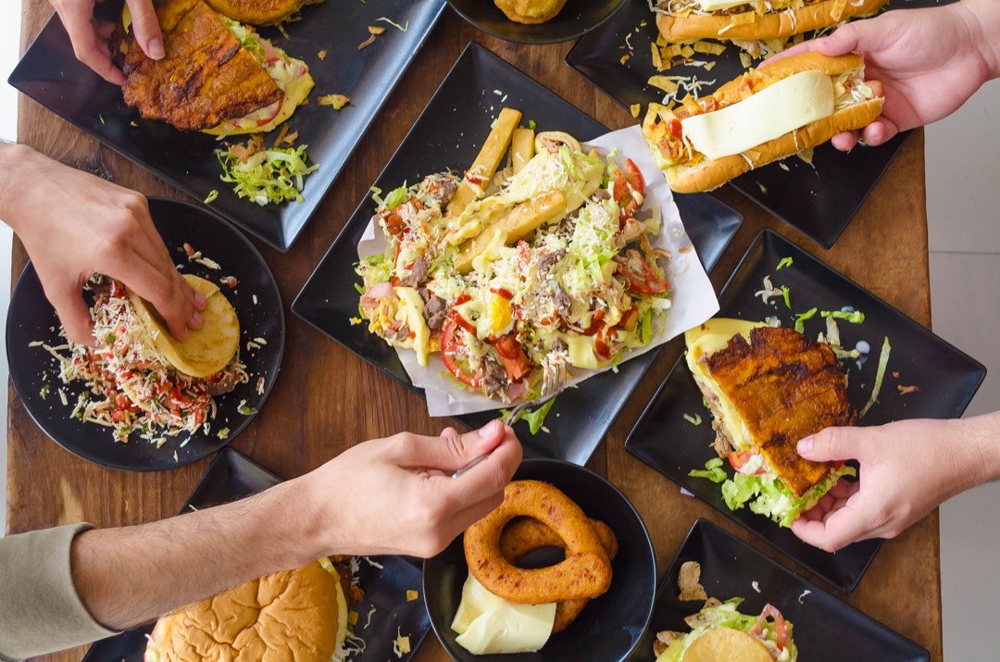

What is Venezuelan Cuisine?
Venezuelan cuisine originated thanks to the combination of various cultures back when Venezuela first became a Spanish colony. The main groups that influenced our dishes were the Europeans and West Africans, as well as the indigenous groups that already resided in the territory that is today known as Venezuela.
These three groups of people mixed and meshed to create a very distinctive cuisine that favors strong bursts of flavor, seamlessly mixing sweet and salty. The most common ingredients used in Venezuelan dishes include corn, plantain, sugar cane, onions, tomatoes, and various other ingredients found in the region.
Why Should You Try it?
I might be biased, but I believe everyone should try Venezuelan food at least once in their life! It is a result of hundreds of years of different groups of people coming together to build one culture, that can cater to any palate and any preference. Plus, traditional Venezuelan recipes require ingredients that can be found in essentially every kitchen, so why not give them a shot?